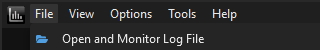
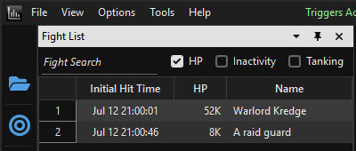
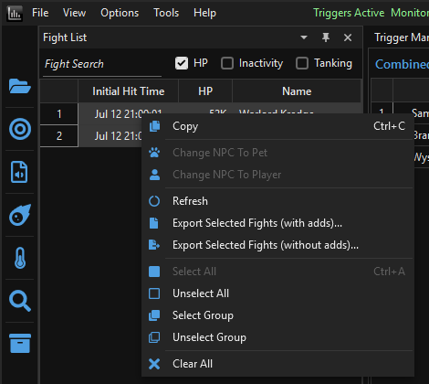
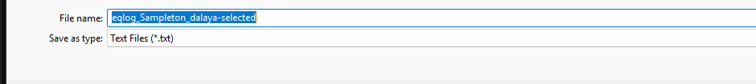

How to open your log, select the raid encounter, and export a share-ready file.
The Raid Damage window combines log files from multiple players to build a complete, cross-player view of a raid encounter. Don't just hand someone your raw EverQuest log — it's unwieldy and full of unrelated chat and downtime. Instead, open your log in EQLogParser, select the fights that make up the raid, and use the built-in export to save a clean, filtered file that's ready to share.
Logging must be active for the entire raid session to capture all events. If you miss the start of a fight because logging wasn't enabled, those events can't be recovered.
/log on in-game before the raid beginsLog=TRUE in eqclient.ini to enable it automatically every sessionSee the Installation guide for more detail on enabling logging.
In the main EQLogParser window, go to File > Open and Monitor Log File
and pick your EverQuest log file (in the Logs subfolder of your EQ
installation, e.g. eqlog_Kateila_dalaya.txt). This works whether you open it
live during the raid or after the fact on a completed log — either way, EQLogParser parses
the file and builds up its Fight List panel with the encounters it finds.

In the Fight List panel, click the fight (or fights) that make up the raid encounter you want to share. Hold Ctrl or Shift to select multiple fights at once — for example, if trash pulls and adds show up as separate entries alongside the main boss fight.

Right-click the selected fight(s) and choose one of the export options:

A save dialog opens with a default filename like eqlog_Kateila_dalaya-selected.txt.
Chat lines are stripped automatically either way — only combat-relevant lines are written
to the exported file.

The same export is also available from the menu bar under File > Save > Selected Fight Log after selecting fights in the Fight List.
Send the exported -selected.txt file — not your raw EQ log — to whoever is
running the Raid Damage merge, typically the raid leader or a designated parser. Any file
transfer method works: Discord, a shared folder, direct message, etc. The default filename
already includes your character name, so it's easy to tell whose file is whose once several
are collected.
Only events your client witnessed are in your log, and the raw file also contains every chat line and idle moment from the session. Exporting via the Fight List trims that down to just the relevant combat window for the encounter you're sharing, which keeps files small and avoids exposing chat you didn't mean to share. Combining exports from multiple players still gives a more complete picture than any single log alone, since each person's client only sees events in their own range.